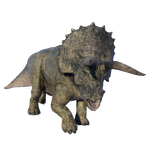

Useful Website
The herbivorous dinosaur Triceratops is one of the largest ceratopsidae, at around 9m in length and weighing 12 tonnes. Notable for its large frill and the three horns on its head – which give rise to its name, which translates to ‘three-horned face – Triceratops’ diet consists mainly of ground level vegetation, although their size may have enabled them to knock over larger plants and trees to feed on.
